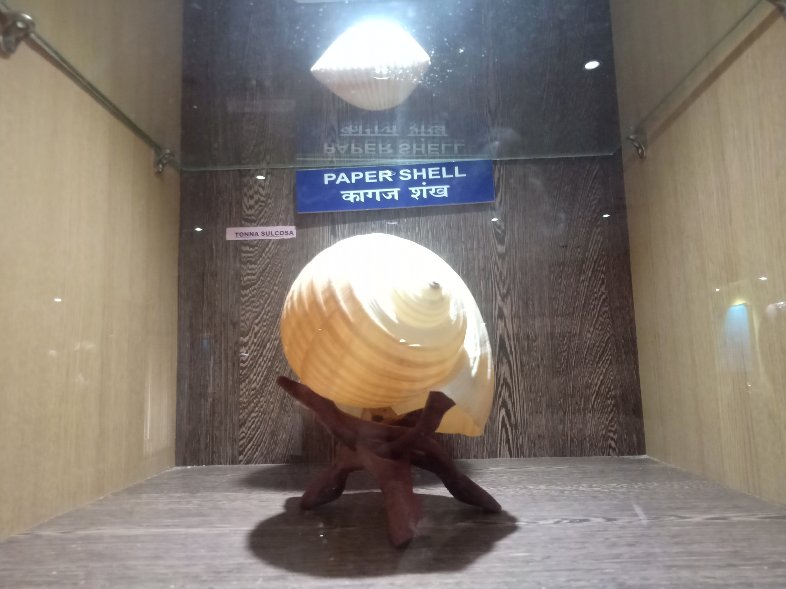

Andaman and Nicobar Islands is one of the Union Territories of India. It is interesting to know that there are about 570 islands of which 38 are permanently inhabited. Out of all the places that I have visited in India, Andaman and Nicobar Islands had been one of the best trips so far. It is not only the name or hype about this place that makes it remarkable. There are many other reasons for which you should read the following blog.
After spending a day seeing beaches here and there, we decided to visit museums as they were appreciated in the Islands of The Andaman and The Nicobar Islands. The name of the Museum we visited was Naval Marine Museum SAMUDRIKA. Museums are seen as boring historical places but this was not at all boring (very honestly speaking). There were so many cool things to see. There were big aquariums inside with so many types of fishes I have never seen before. Not only that, there were a collection of shells. It was a whole auditorium filled with various types and shapes of shells. I also got a chance to see a big skeleton of the blue whale. It was as big as a submarine. The other museums I visited were also spectacular. They were depicting the lives of the tribes living in the forests of The Andaman and The Nicobar Islands. All this allowed me to dig deeper into the facts.
The next day, We visited a place very well known for its prison. Yes, The Cellular Jail, also known as Kala Paani. It was the first time I saw what a jail exactly looks like. This jail was giving me a pity feeling for all the prisoners that were captives there. They could not even escape because the place was surrounded by the sea all around. The view from the roof was the most beautiful view I have ever seen. It was a small island surrounded by waters and coconut trees from all sides. I could feel the cool breeze coming on my face after every few seconds. Here are some of the snapshots I captured from the place.
Eating snacks and food was not allowed inside. But I remember eating chips with my brother secretly. I was hungry. It was a different level of fun eating chips in Jail. I did this but you should not try it (Laughing Internally). We waited till the night for the Light Show. It was an amazing show explaining the life of prisoners through all lights and recorded voices. Unfortunately, I could not capture this moment on camera as it was not allowed. But one should experience this moment.
The next day, we left for Havelock Island. We had a cruise from Port Blair to Havelock. It was my first cruise. I was looking forward to it. New things and adventures fascinate me. Cruises are very comfortable from the inside. I never imagined what turned inside. There were seats to sit and music playing inside. There was a small restaurant for snacks. I was not interested in anything else. I was looking outside at the waves of the ocean. It was all looking so good. When we were going to Havelock, it was morning, and so the water was still and calm. Everyone was enjoying it. But I want to give an alert that while returning, it was evening. The waves were in high motion. As a result, the cruise was shaking too much. It was giving sea sickness. Many started puking. I could not see all that and so instead preferred to sleep. But all over was a good one for me.
The adventure ended at top the top point of the Port Blair after returning from Havelock. I could see all the view from there and all the flights taking off flying above my head. This was another level of amusement. This trip was like a dream which is now over. I want to go back.